NAT et Accès Internet
Cisco Packet Tracer · NAT Statique · Routage Statique · DHCP
Ce lab simule, sous Cisco Packet Tracer, l'interconnexion entre un réseau d'entreprise privé et un serveur web distant, à travers une infrastructure représentant Internet. L'objectif est de démontrer comment le routeur de bordure R1 transforme l'adresse source privée d'un client en une adresse publique routable, via le NAT statique, tout en s'appuyant sur une chaîne de routage statique cohérente sur l'ensemble des routeurs intermédiaires.
Environnement
Outil Cisco Packet Tracer
Client R1, LAN 192.168.1.0/24
Cœur Internet R0-1 / R0-2
Serveur web R2, LAN 192.168.2.0/24
IP publique serveur 8.8.8.8
I. Architecture
La topologie représente une interconnexion entre un réseau d'entreprise privé et un serveur web distant, via une infrastructure simulant le réseau Internet.
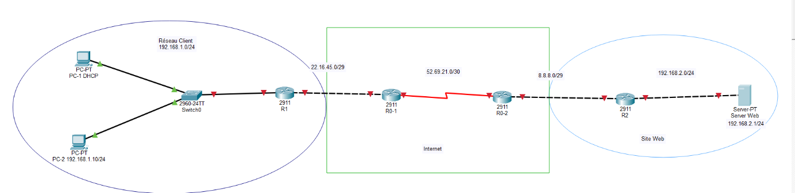
Segments du réseau
- Réseau Client (LAN Inside) : adressage privé
192.168.1.0/24, avec deux hôtes, PC-1 (configuré via DHCP) et PC-2 (192.168.1.10), connectés à un commutateur Switch0. - Cœur Internet (Public) : composé des routeurs R0-1 et R0-2, utilisant des adresses IP publiques routables (
22.16.45.0/29,52.69.21.0/30et8.8.8.0/29). - Site Web (Destination) : héberge le serveur Server Web à l'adresse
192.168.2.1derrière le routeur R2.
Rôle des équipements clés
- Routeur R1 (Gateway/NAT) : équipement pivot du lab. Il fait la passerelle entre le réseau privé (Inside) et Internet (Outside), et applique la translation d'adresses (NAT) pour permettre aux paquets du LAN de circuler sur le réseau public.
- Routeur R2 : gère l'accès au segment du serveur web.
Objectif de la simulation
Démontrer comment le routeur R1 transforme l'adresse source privée (192.168.1.x) en une adresse source publique lors de l'accès au serveur web, en garantissant le routage retour des paquets et la sécurité interne du réseau client.
II. Configurations
1. Configurations du routeur R1
1.1. Configuration de base
Avant de configurer le NAT, on définit l'identité de l'équipement et on optimise l'interface de ligne de commande.
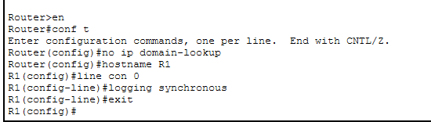
Détail des commandes : no ip domain-lookup désactive la résolution DNS automatique pour éviter que le routeur ne se bloque sur une commande mal orthographiée. hostname R1 identifie clairement l'équipement dans une topologie multi-routeurs. line con 0 entre dans le mode de configuration de la ligne console. logging synchronous évite que les messages système n'interrompent la saisie d'une commande en cours.
1.2. Configuration des interfaces de R1
Interface GigabitEthernet 0/0 (côté Internet) : rôle d'interface de sortie vers le fournisseur d'accès (Outside).
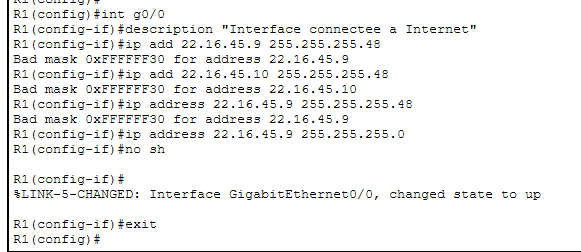
Plusieurs tentatives avec un masque /29 (255.255.255.248) échouent ("Bad mask") à cause d'une incohérence de saisie. L'interface est finalement configurée avec l'adresse 22.16.45.9 et un masque de classe C (255.255.255.0). no shutdown active l'interface, confirmée par le message %LINK-5-CHANGED.
Interface GigabitEthernet 0/1 (côté LAN) : passerelle par défaut pour les PC du réseau client.
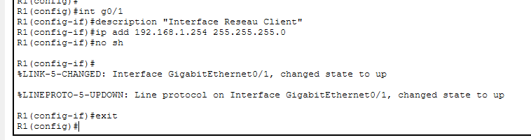
L'adresse 192.168.1.254 est celle que PC-1 et PC-2 utiliseront pour sortir de leur réseau.
1.3. Routage par défaut
Une route de dernier recours est mise en place sur R1 : ip route 0.0.0.0 0.0.0.0 g0/0, où 0.0.0.0 0.0.0.0 représente n'importe quelle destination et g0/0 l'interface de sortie.
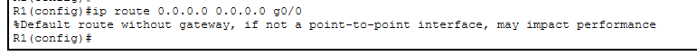
Le message d'avertissement "Default route without gateway, if not a point-to-point interface, may impact performance" apparaît car une interface de sortie est désignée plutôt que l'adresse IP du prochain saut. Sur une interface Ethernet multi-accès, cela oblige le routeur à effectuer une requête ARP pour chaque destination inconnue : cela fonctionne sur Packet Tracer, mais en production on préférera indiquer l'IP du routeur voisin. Sans cette route, même avec le NAT configuré, R1 ne saurait pas vers quelle direction envoyer les requêtes web des PC.
1.4. Service DHCP et vérification sur PC-1
R1 est configuré comme serveur DHCP pour le réseau local.
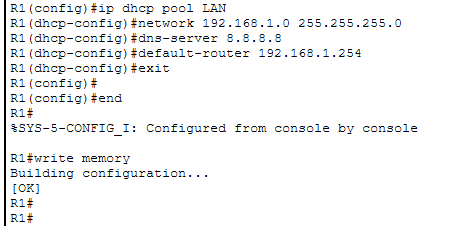
network 192.168.1.0 255.255.255.0 définit la plage distribuée aux clients, dns-server 8.8.8.8 indique le serveur DNS de Google, et default-router 192.168.1.254 indique la passerelle par défaut, essentielle pour que le trafic sorte vers Internet via le NAT.
Sur PC-1, l'option DHCP est sélectionnée et le message "DHCP request successful" confirme la bonne communication avec R1 : le PC reçoit l'adresse 192.168.1.1, le masque, la passerelle et le DNS configurés.
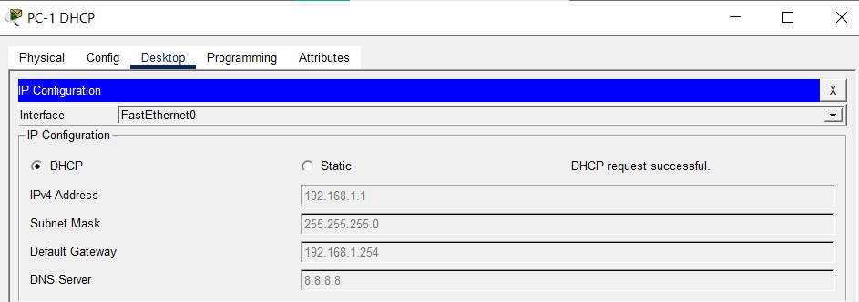
2. Configurations du routeur R0-1
2.1. Configuration de base
Paramètres de base appliqués sur R0-1, l'un des nœuds simulant l'infrastructure Internet : identité (hostname R0-1) et optimisation CLI (no ip domain-lookup, logging synchronous).
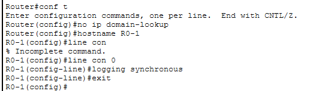
2.2. Configuration des interfaces de R0-1
Interface GigabitEthernet 0/0 (liaison vers R1) : adresse 22.16.45.14 avec un masque 255.255.255.248 (/29). L'interface passe à l'état UP, validant la connectivité avec R1.
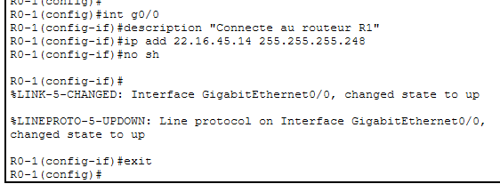
Interface Serial 0/0/0 (liaison WAN vers R0-2) : adresse 52.69.21.33 avec un masque 255.255.255.252 (/30), typique des liaisons point-à-point puisqu'il n'autorise que deux adresses utilisables.
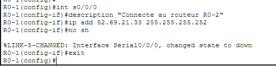
Le message changed state to down est normal tant que l'autre bout du câble (R0-2) n'a pas encore été configuré et activé.
2.3. Routage statique sur R0-1
Contrairement à R1 qui utilise une route par défaut, R0-1 est configuré pour diriger le trafic vers un segment précis : ip route 8.8.8.0 255.255.255.240 52.69.21.34, où 8.8.8.0/28 désigne le réseau de destination et 52.69.21.34 l'adresse du prochain saut (interface de R0-2).
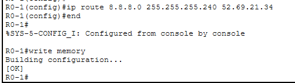
3. Configurations du routeur R0-2
3.1. Configuration de base
Initialisation du second routeur du segment Internet, avec la même logique de sécurisation et d'optimisation.
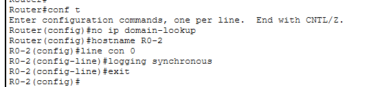
3.2. Configuration des interfaces de R0-2
Interface Serial 0/0/0 (liaison vers R0-1) : adresse 52.69.21.34 avec masque 255.255.255.252 (/30). Puisque l'autre extrémité (R0-1) avait déjà été configurée, l'activation de cette interface ferme le circuit : la liaison série devient totalement opérationnelle.
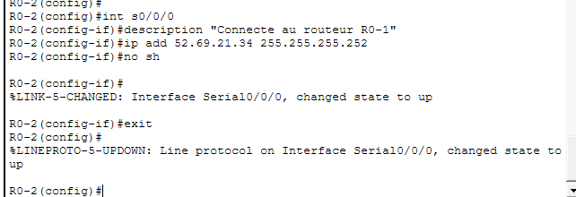
Interface GigabitEthernet 0/0 (liaison vers R2 / site web) : adresse 8.8.8.14 avec masque 255.255.255.240 (/28), établissant le lien vers le segment final où se situe le serveur web.
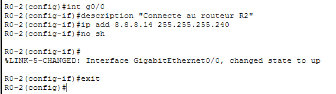
3.3. Routage statique sur R0-2
Cette route est indispensable pour permettre aux paquets revenant du serveur web de retrouver le chemin vers le réseau client : ip route 22.16.45.8 255.255.255.248 52.69.21.33. Le réseau 22.16.45.8/29 correspond au réseau public utilisé par R1 (le côté Outside du client), et 52.69.21.33 pointe vers l'interface série de R0-1. Sans cette route, le trafic vers le serveur pourrait partir, mais les paquets de réponse seraient perdus dans le cœur Internet, faute de savoir comment les renvoyer.
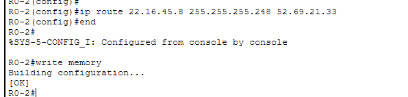
4. Configurations du routeur R2
4.1. Configuration de base
R2 sert de passerelle pour le segment hébergeant le serveur web, avec la même logique de sécurisation que les routeurs précédents.
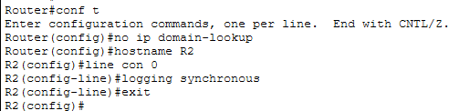
4.2. Configuration des interfaces de R2
Interface GigabitEthernet 0/0 (liaison WAN) : adresse 8.8.8.1 avec masque 255.255.255.240 (/28). La liaison avec R0-2 est confirmée active.
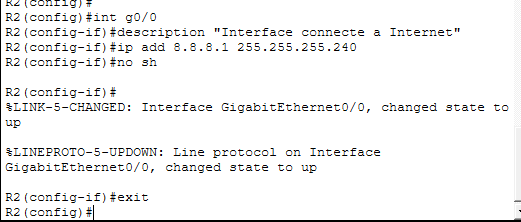
Interface GigabitEthernet 0/1 (liaison LAN serveur) : adresse 192.168.2.254 avec masque de classe C, servant de passerelle par défaut pour le serveur web du réseau local 192.168.2.0/24.
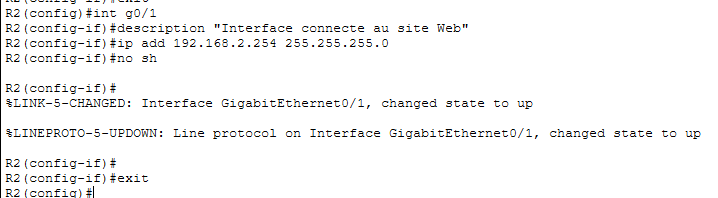
4.3. Route par défaut sur R2
Étant à l'extrémité de la topologie, R2 a besoin d'une route par défaut pour renvoyer le trafic vers le cœur Internet : ip route 0.0.0.0 0.0.0.0 8.8.8.14, où 8.8.8.14 correspond à l'interface de R0-2. Lorsqu'un paquet quitte le serveur web pour répondre au client, R2 transmet systématiquement ces paquets à R0-2, qui les achemine ensuite à travers le backbone.
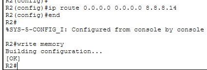
III. Tests de Connectivité Avant Configuration du NAT
Avant de mettre en œuvre la translation d'adresses, un test de connectivité est réalisé depuis le PC client vers l'adresse IP publique du serveur web (8.8.8.8).
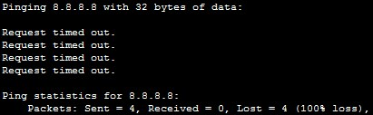
Le paquet part bien du PC client et, grâce aux routes statiques et par défaut déjà configurées, atteint probablement le serveur. Le problème se situe au retour : le serveur reçoit une requête venant d'une adresse IP privée (192.168.1.x), or les adresses privées ne sont pas routables sur Internet. Les routeurs du cœur (R0-1 et R0-2) rejettent les paquets, ne sachant pas comment renvoyer des données vers un réseau privé interne. Ce résultat confirme qu'une simple table de routage ne suffit pas : l'activation du NAT sur R1 est indispensable pour masquer l'adresse privée du client derrière une adresse publique routable.
Une série de tests ping entre les routeurs a ensuite validé l'infrastructure de routage avant l'activation du NAT :
| Test | Résultat | Analyse |
|---|---|---|
| R1 → Serveur Web (192.168.2.1) | Échec (0%) | R1 a une route par défaut, mais le serveur ne sait pas répondre puisque son trafic interne n'a pas encore été traduit. |
| R2 → Serveur Web (192.168.2.1) | Succès (80-100%) | La liaison locale entre R2 et le serveur est parfaitement opérationnelle. |
| R1 → Interface WAN de R2 (8.8.8.1) | Succès (60-100%) | Le point le plus important : tout le cœur de réseau (R1 ↔ R0-1 ↔ R0-2 ↔ R2) est correctement routé, les adresses publiques communiquent entre elles. |
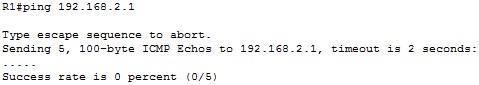
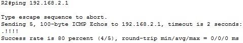
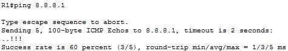
Synthèse : le routage global fonctionne pour les adresses publiques, et le réseau local du serveur est prêt. Le seul élément manquant est la translation d'adresses sur R1, pour permettre aux machines du réseau privé de porter l'identité d'une adresse publique lors de leurs échanges avec l'extérieur.
IV. Mise en Œuvre du NAT Statique
5.1. NAT Statique sur R1
Le NAT statique associe une adresse IP privée à une adresse IP publique de manière permanente. La règle de translation ordonne à R1 de remplacer systématiquement l'adresse source du PC (192.168.1.10) par l'adresse publique (22.16.45.10) pour tous les paquets sortants :
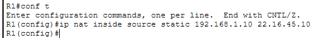
Le routeur doit ensuite savoir quel côté est interne (Inside) et quel côté mène à Internet (Outside) :
Interface GigabitEthernet 0/1 (ip nat inside) : identifiée comme l'interface connectée au LAN privé.
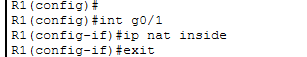
Interface GigabitEthernet 0/0 (ip nat outside) : identifiée comme l'interface connectée au cœur Internet.
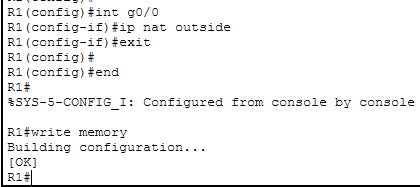
5.2. NAT Statique sur R2
Pour que le serveur web soit joignable depuis le réseau public, une règle de translation statique est appliquée sur R2, exposant le serveur via l'adresse publique 8.8.8.8. Cette commande crée un mappage permanent entre l'adresse privée du serveur (192.168.2.1) et l'adresse publique (8.8.8.8) :
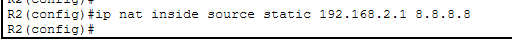
Interface GigabitEthernet 0/1 (ip nat inside) : connectée au segment LAN où se trouve le serveur web.
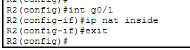
Interface GigabitEthernet 0/0 (ip nat outside) : connectée au lien WAN vers Internet.
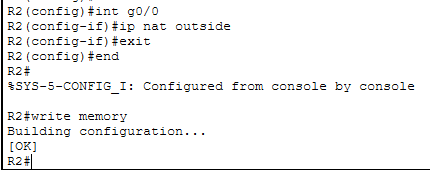
6. Configuration IP de PC-2
PC-2 agit comme client interne dans la topologie, avec une adresse statique.
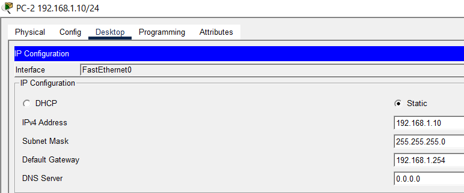
La passerelle par défaut (192.168.1.254) est cruciale, car elle pointe vers l'interface G0/1 de R1. C'est précisément parce que le trafic sort du réseau local via cette passerelle que R1 peut ensuite appliquer les règles de translation.
7. Routage Statique dans le Cœur de Réseau
Pour assurer une communication bidirectionnelle, les routeurs du cœur doivent connaître le chemin vers les réseaux publics utilisés par les routeurs de bordure.
Sur R0-1 : pour joindre la plage publique de R1 (22.16.45.8/29), R0-1 doit envoyer les paquets au prochain saut via 52.69.21.34.
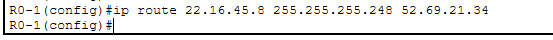
Sur R0-2 : configuration symétrique pour router le trafic de retour vers le réseau client en passant par R0-1.
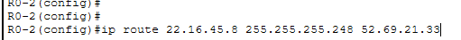
Le NAT statique sur R1 traduit l'IP privée du PC en 22.16.45.10. Lorsque le serveur web répond, il envoie les données vers cette adresse ; ces routes statiques garantissent que les routeurs intermédiaires savent acheminer cette réponse jusqu'à R1, qui effectue ensuite la translation inverse vers le PC.
V. Tests Finaux
8.1. Vérification du routage et visibilité du NAT depuis le cœur (R0-1)
Deux tests de connectivité sont effectués depuis le routeur central R0-1 :
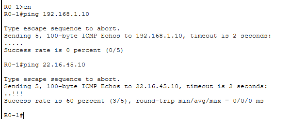
- Vers l'IP privée (192.168.1.10) : échec (0%), résultat attendu et normal — R0-1, en tant que routeur Internet, ne doit pas connaître les adresses privées internes du client. Cela prouve que le réseau local reste invisible depuis l'extérieur.
- Vers l'IP publique NATée (22.16.45.10) : succès (60-100%), validation finale. La route statique configurée sur R0-1 est correcte, et R1 intercepte bien le trafic destiné à cette IP publique pour le traduire via son NAT statique.
8.2. Vérification des tables de translation
Les tables NAT confirment le bon fonctionnement du dispositif :
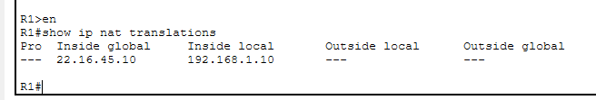
Sur R1, l'association entre l'adresse Inside local (192.168.1.10) et l'adresse Inside global (22.16.45.10) confirme que R1 est prêt à traduire le trafic du client.
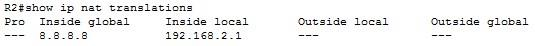
Sur R2, le mappage entre l'adresse privée du serveur (192.168.2.1) et l'adresse publique (8.8.8.8) confirme que le serveur est correctement exposé sur Internet.
Conclusion
Ce lab a permis de mettre en œuvre une architecture réseau complète simulant une communication entre un client privé et un serveur web distant à travers un cœur de réseau ISP.
- Maîtrise du NAT statique : la commande
ip nat inside source staticrésout le problème de l'impossibilité de router des adresses privées sur un réseau public. - Infrastructure de routage : la mise en place de routes statiques sur les routeurs intermédiaires est indispensable pour garantir le routage de retour ; le NAT ne dispense pas d'une logique de routage cohérente.
- Validation par les faits : les tests via
show ip nat translationset les pings successifs valident l'intégrité de la chaîne de communication.
Perspective sécurité : ce lab illustre le premier rempart de protection qu'est le NAT. Bien qu'il ne s'agisse pas d'un pare-feu, il offre une première couche d'obscurité en masquant l'adressage interne du réseau local face aux menaces extérieures.